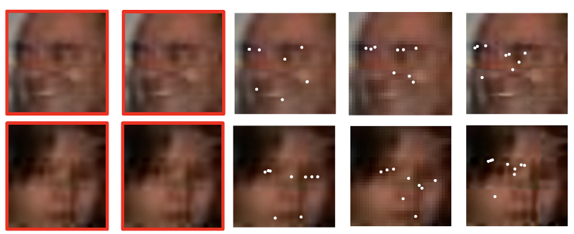

|
Amit Kumar I'm a research scientist at Meta (previously Facebook), working in the Reality AI, where I my focus lie in human centric computer vision and understanding. At Meta I've worked on Periocular authentication, 3D generative AI from self portraits, landmark tracking with transformers and realistic AI avatars. |

|
ResearchI'm interested in computer vision, deep learning, generative AI, and image processing. Most of my research is about huamn centric computer vision, ranging from 3D generation of avatars to modeling and personalizing behaviors of these avatars. Some publications are listed below. |
|
|
TalkinNeRF: Animatable Neural Fields for Full-Body Talking Humans
Aggelina Chatziagapi, Bindita Chaudhury, Amit Kumar, Rakesh Ranjan, Dimitris Samaras, Nikolaos Sarafianos ECCV, 2024 / arXiv TalkinNeRF is a unified NeRF-based network that represents the holistic 4D human motion. Given a monocular video of a subject, we learn corresponding modules for the body, face, and hands, that are combined together to generate the final result. |

|
AVFace: Towards Detailed Audio-Visual 4D Face Reconstruction
Aggelina Chatziagapi, Dimitris Samaras, CVPR, 2023 / arXiv AVFace incorporates both modalities (audio and video) and accurately reconstructs the 4D facial and lip motion of any speaker, without requiring any 3D ground truth for training. |

|
HIME: Efficient Headshot Image Super-Resolution with Multiple Exemplars
Xiaoyu Xiang, Jon Morton, Fitsum Reda, Lucas D Young, Federico Perazzi, Rakesh Ranjan, Amit Kumar, Andrea Colaco, Jon P Allenbach WACV, 2024 / arXiv It is challenging to make the best use of multiple exemplars: the quality and alignment of each exemplar cannot be guaranteed. Using low-quality and mismatched images as references will impair the output results. To overcome these issues, we propose the efficient Headshot Image Super-Resolution with Multiple Exemplars network (HIME) method. |

|
EyePAD++: A Distillation-based approach for joint Eye Authentication and Presentation Attack Detection
using Periocular Images
Prithviraj Dhar, Amit Kumar, Kirsten Kaplan, Khushi Gupta, Rakesh Ranjan, Rama Chellappa, CVPR, 2022 / arxiv We propose Eye Authentication with PAD (EyePAD), a distillation-based method that trains a single network for EA and PAD while reducing the effect of forgetting. |
|
|
EVRNet: Efficient Video Restoration on Edge Devices
Sachin Mehta, Amit Kumar, Fitsum Reda, Varun Nasery, Vikram Mulukutla, Rakesh Ranjan, Vikas Chandra, ACM-MM, 2021 / arxiv To restore videos on recipient edge devices in real-time, we introduce an efficient video restoration network, EVRNet. EVRNet efficiently allocates parameters inside the network using alignment, differential, and fusion modules. |
|
|
Semi-Supervised Landmark-Guided Restoration of Atmospheric Turbulent Images
Sunandita Patra, James Mason, Amit Kumar, Malik Ghallab, Paolo Traverso, Dana Nau, ICAPS, 2020 / arxiv RAE uses hierarchical operational models to perform tasks in dynamically changing environments. |
|
|
Semi-Supervised Landmark-Guided Restoration of
Atmospheric Turbulent Images
Samuel Chun Pong Lau, Amit Kumar, Rama Chellappa, IEEE Journal of Selected Topics in Signal Processing (JSTSP), 2021, 2020 / IEEE A semisupervised method for jointly extracting facial landmarks and restoring the degraded images by exploiting the semantic information from the landmarks. |
|

|
S2LD: Semi-Supervised Landmark Detection in Low Resolution Images
and Impact on Face Verification
Amit Kumar, Rama Chellappa, CVPR-W, 2020 / arxiv Predicting landmarks directly on low resolution images is more effective than the current practice of aligning images after rescaling or super-resolution. |
|
|
Attention Driven Vehicle Re-identification and Unsupervised Anomaly Detection
for Traffic Understanding
Pirazh Khorramshahi, Neehar Peri, Amit Kumar, Anshul Shah, Rama Chellappa, CVPR Nvidia City Challenge (Oral), 2019 / arxiv We leverage an attention-based model which learns to focus on different parts of a vehicle by conditioning the feature maps on visible key-points. We use triplet embedding to reduce the dimensionality of the features obtained from the ensemble of networks trained using different datasets. |
|
|
A Dual-Path Model With Adaptive Attention For Vehicle Re-Identification
Pirazh Khorramshahi, Amit Kumar, Neehar Peri, Sai Saketh Rambhatla, Jun-Cheng Chen, Rama Chellappa, ICCV (Oral), 2020 / arxiv In AAVER, the global appearance path captures macroscopic vehicle features while the orientation conditioned part appearance path learns to capture localized discriminative features by focusing attention on the most informative key-points. |
|
|
Disentangling 3D Pose in A Dendritic CNN
for Unconstrained 2D Face Alignment
Amit Kumar, Rama Chellappa, CVPR, 2018 / CVPR Following a Bayesian formulation, we disentangle the 3D pose of a face image explicitly by conditioning the landmark estimation on pose, making it different from multi-tasking approaches. |